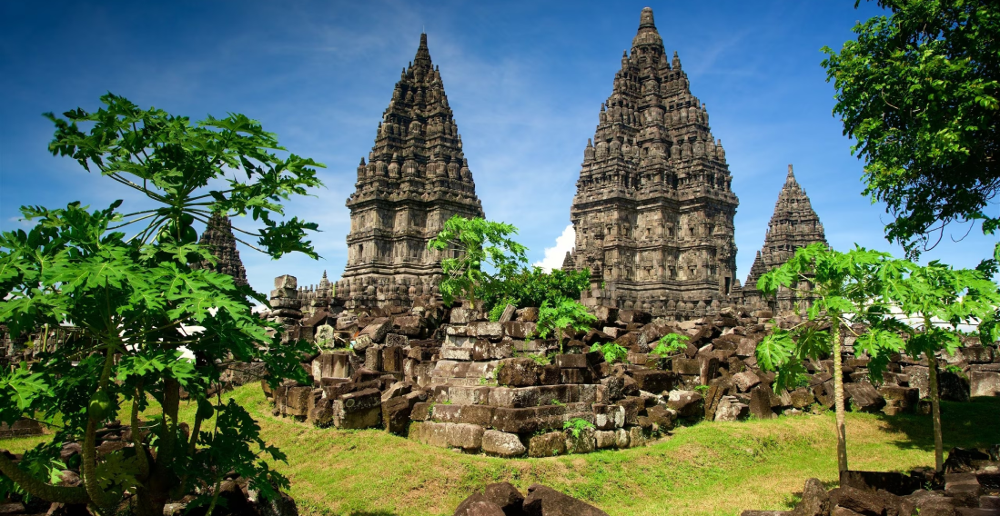

provinsi
daya tarik
natural & historikal
keunggulan
pariwisata
kualitas
infrastruktur
Provinsi di Indonesia yang terletak di bagian tengah Pulau Jawa. Ibu kota dari Provinsi Jawa Tengah adalah Kota Semarang. Terkenal karena daya tarik nya dan keunggulannya di sektor pariwisata budaya. Selain itu, Jawa Tengah juga memiliki kualitas Infrastruktur yang baik dan memadai
Jawa Tengah dinilai memiliki daya tarik natural dan historikal seperti objek pariwisata budaya dan wisata alam. Hal ini menjadikan suatu keunggulan potensi daya tarik yang dimiliki oleh Jawa Tengah
Banyak terdapat obyek wisata yang sangat menarik baik wisata alam maupun wisata budaya. Bahkan salah satu dari tujuh keajaiban dunia terletak di Provinsi Jawa Tengah, yaitu Candi Borobudur.
Pembangunan infrastruktur di Provinsi Jawa Tengah sudah memadai, hal ini dapat dilihat dari potensi infrastruktur posisi Jawa Tengah ada pada urutan keempat setelah DKI Jakarta, Kalimantan Timur, dan Jawa Timur. Pemerintah Provinsi Jawa Tengah bahkan terus melakukan percepatan pembangunan Jawa Tengah dengan salah satu fokus utamanya pada pembangunan infrastruktur